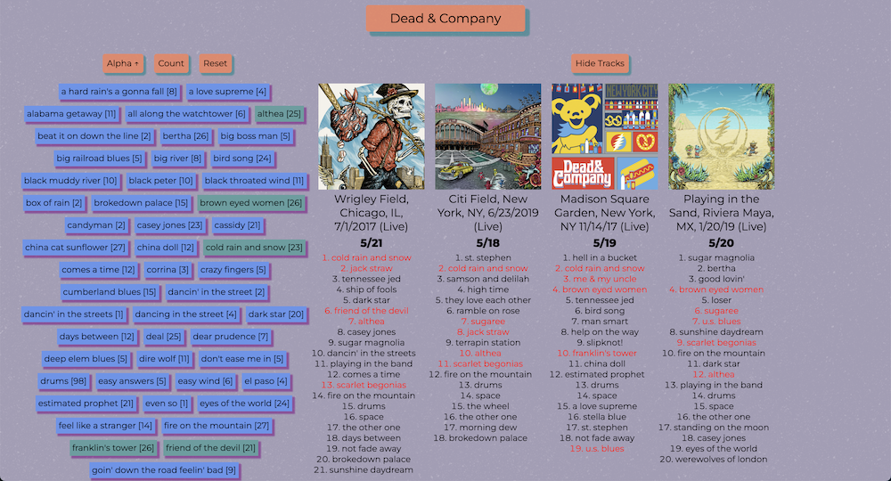
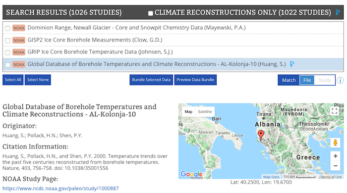
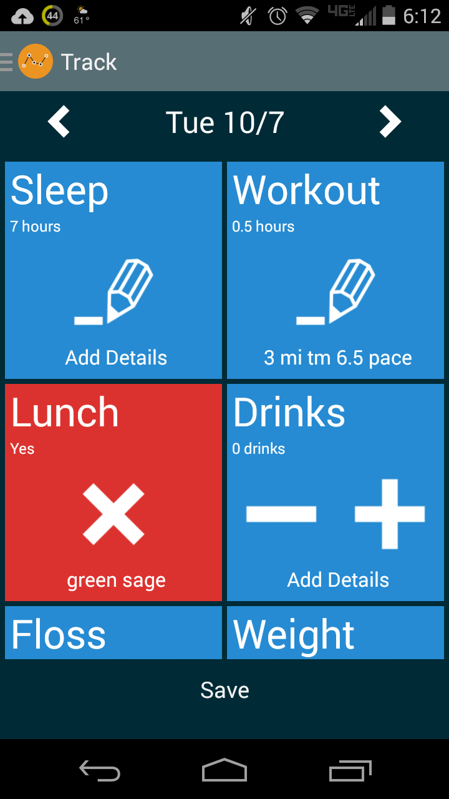
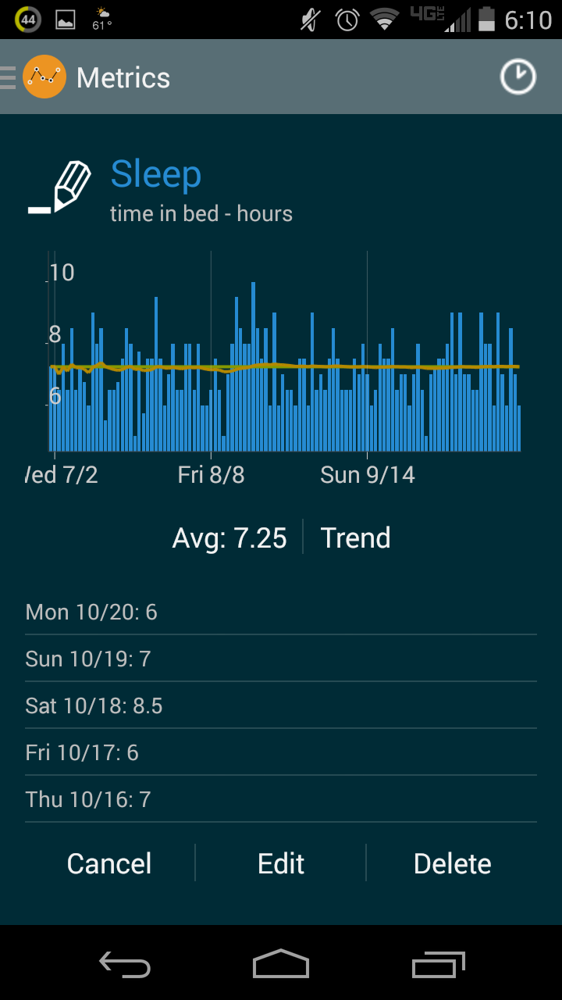
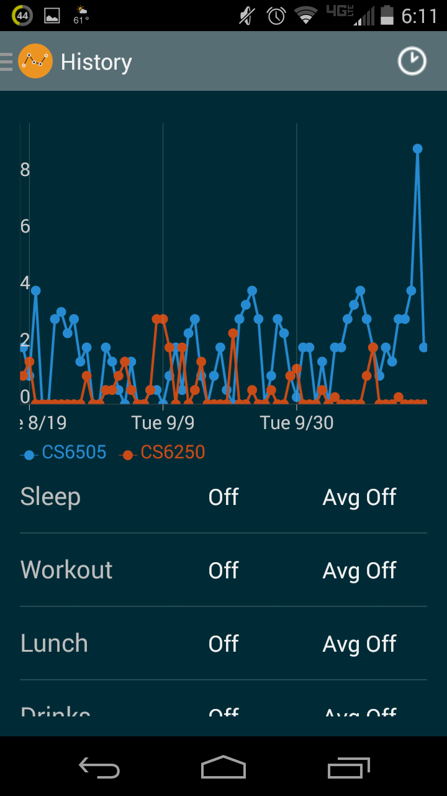

Streamlined access to the most popular variables from several versions of NCEI's decadal Climate Normals project. Users can view normals station data for several time periods, and links are provided to more detailed reports and station metadata. Built on the NCEI Common Access web service.
SetListr

I started listening to jam band sets on my long weekend runs, and was wondering which ones had the highest ratio of my favorite songs. I made this tool to answer that question. Built with React and Express on the Spotify API, also caches album info in a MongoDB instance and uses FlipMove for animations. Learned a lot about how messy Spotify metadata is.
2017 Eclipse Traffic

Lots of conversations I had before the 2017 eclipse involved guessing what the traffic situation was going to be like, so I decided it would be neat to visualize it and threw this project together at the last minute. I created a simple HTML page that showed the map I was interested in, with the Google traffic data layer. The page used html2canvas.js to create an HTML canvas version of the map after it loads. I set up phantomJS to scrape that page every 10 minutes. After the traffic died down, I used Python and OpenCV to add a layer to the images with the time and totality path from this data. Finally I merged all the images in Photoshop. You can see the final results here.
{kind=link}
Paleo DIVER/DIVER API

This is NCEI's Paleoclimatology study search and access tool, for which I am the principal developer. It is a Spring application using myBatis/Oracle providing a RESTful API, and a search interface built with AngularJS. The interface allows searching over popular fields such as study investigators, locations, and time periods, and was recently updated to support terms from the multi-year Controlled Variables standardization project. Bulk data access is enabled via a data bundling api and through the search interface. Currently undergoing a migration to ReactJS.
Lifetracker



I was looking for a simple tool to keep track of some basic recurring information, e.g. how much do I sleep, how much time am I spending on classwork, etc. I couldn't find anything I liked, so I built an Android application. Basic functionality is done and I'm adding features as I have time. If you want to try it out, you can get the most current apk here.
Asheville Crime Mapper

I used some of Asheville's open city data to map crime information for the area. Data is pulled from the city data web service, and stored locally to a mondgodb instance. It's then displayed interactively using lefalet.js/heatmap.js. Unfortunately the city's GIS service is no longer active so the tool is not current.
NCDC Historical Observational Metadata Repository (HOMR) / HOMR API

This is NCDC's station metadata access system, for which I am the sole developer. It's a standard Spring MVC application using iBatis mappings into an Oracle database to serve a RESTful web service. The metadata search and visualizations are built on this service, and are presented as a single-page app. On the locations tab I implemented a new system for displaying station locations where we don't have precise coordinates, showing areas instead of points for these types of stations. D3.js is used for the Gantt chart on the MSHR tab.
Friendly Library

FrindlyLib lets people create a catalog of their book, movies, and other physical media, and keep track of them when they're loaned out. Users can also search among their friends for items they want to borrow. I've used this project to learn a few technologies, so it's kind of a mess and never finished.
Asheville Transit Mobile

I did a mobile-first redesign of the Asheville Transit website, including an interactive route map, for a class I took. It uses some Groovy scripts to assemble the route files into kml format.
Robot Race

Java/Swing implementation of the Robo-Rally board game by Wizard of the Coast.
Hi, I'm Ethan Shepherd, a developer building web and science data applications in Las Vegas, NV. I've worked on everything from satellite data products using C and Fortran, to Spring MVC apps on Oracle, to SPA's with Node, Angular, and React. This page is a collection of some of the things I've built, either for my job or to learn something new.